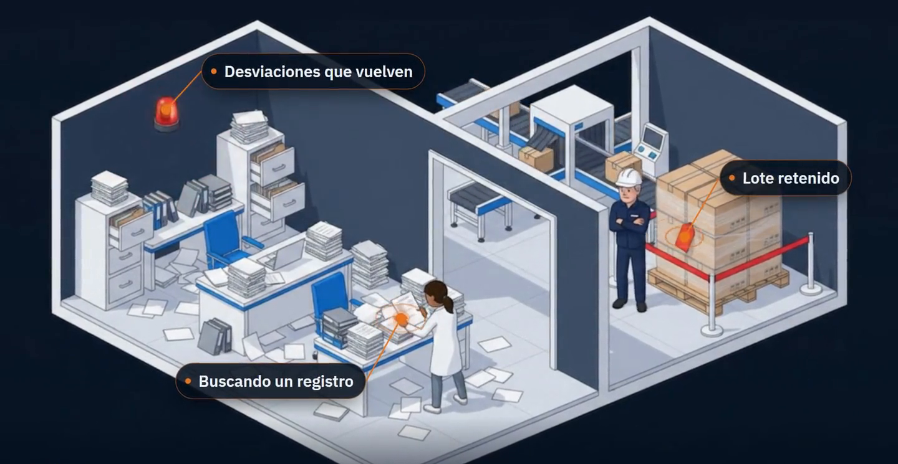
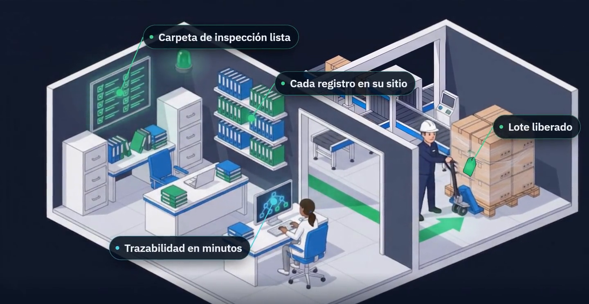

La auditoría llega.
¿Tu carpeta está lista?

Hoy

Con BOUW
33→100 %
preparación para inspección
9 → 0
CAPA abiertas
3 → 0
lotes retenidos
Planta de ejemplo (ilustrativo). Informe de auditoría BPM simulado.